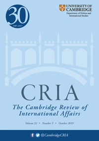

收录于合集
作品简介
【作者】 兰德尔·施韦勒 （Randall Schweller），美国俄亥俄州立大学政治学教授，国际关系新古典现实主义理论创始人。
【 编译】 李源（国政学人编译员，吉林大学公共外交学院）
【校对】 徐垚晟
【审核 】 金磊
【排版】 梁鑫昱
【 来源 】 Schweller, R. (2010). Entropy and the Trajectory of World Politics: Why Polarity Has Become Less Meaningful. Cambridge Review of International Affairs, 23 (1), 145-163.
期刊介绍

《剑桥国际事务评论》（ Cambridge Review of International Affairs ）于1985年创立，是国际关系同行评审学术期刊，以季刊形式发行。由剑桥大学国际研究中心（现隶属牛津大学政治与国际关系学院）编辑，Routledge组织出版。2018年影响因子为0.656。
“熵”与世界政治的轨迹：为何极不再那么有意义
Entropy and the trajectory of world politics: why polarity has become less meaningful
Randall Schweller
内容提要 **
当 今单极世界的不确定性揭示了熵的日益增加。这种说法出于两个原因：首先，单极体系下的相对实力优势并不能像以前一样能够被轻易地转化为权力与影响力。其次，体系约束是一种通过改变特定行为的成本与收益进而限制行为体行动自由的体系属性。但与过去的多极和两极体系不同，当今的单极体系仅仅对单极国家和其他所有行为体施加了非常弱的体系约束（如果这种单极体系约束是存在的话）。因此，极(polarity)在很大程度上已成为一个毫无意义的概念。如今，体系进程而非结构最能够解释国际政治，而这一进程就是熵的一种。最后，作者提出了从单极体系转化为均势体系的两种途径：一条是标准的现实主义均势路径，但这需要某种观念上的要素；另一条则是通过熵恢复均势。
** 文章导读
**
**
一、 热力学第二定律与“熵”
热力学第二定律主张，系统的总能量由两个彼此独立的部分组成：可用于工作的能量（有用能）和不可用于工作的能量（无用能）。 热力学中以“熵”来衡量系统中的混乱状态 ，它控制着宇宙中发生的所有物理变化的方向。 在封闭的系统内，系统从有序向无序的自发过程中，“熵”总是趋于增加的，这一过程是不可逆的。 熵这一概念解释了为什么封闭系统会不可避免地走向能量的无序与均衡，并且度量了信息的丢失量。同时，一旦达到了“熵”的状态，就没有了回头路，系统的初始状态将永远不可恢复。
为了确定熵这一概念对国际政治研究是否具有意义，作者首先回答了一个最基本的问题： 能否将国际政治视为一个封闭体系？ 作者认为， 从至少两个方面来看，国际政治本质上确为一个封闭体系。 首先，成为主要大国面临着巨大障碍。 只有很少的国家曾成为或希望成为大国。极这一概念本身就意味着寡头性，在单极体系下则表现为霸权对国际体系的统治。国家之间的不平等是国际政治的现实，只有少数有影响力的行为体扮演着重要角色。从这一有限但至关重要的意义上说，国际政治是一个相对封闭的体系。其次， 国际政治是否是一个封闭体系的问题可以在整体上适用于如今的国家体系。 从这个更为宽泛的角度来说，如今的国际体系已经覆盖了整个地球，没有什么可以置身于外。
热力学第二定律是普遍适用的，那为什么现在应该用日益增加的熵来解释如今的国际政治呢？作者对此给出了两个回应。首先，作者试图解释的是现代国家体系。其次，该定律仅仅适用于封闭系统。而国际政治在上世纪初才成为一个封闭体系。
如果熵的确可以被应用于国际体系中，又会引发另一个问题： 熵在国际政治中究竟能够衡量什么？ 作者认为，熵这一概念衡量了体系对单元约束程度的变化。 随着熵的增加，体系约束减弱。 当体系约束较强时，体系将以可预测的方式运行； 当体系约束较弱时，体系将以不确定性和无序的方式运行。 这是因为，随着熵的增加，宏观状态(macrostate)会由更多的具体形态构成，而这便意味着宏观状态将会展现更少的关于具体形态的信息。
** 二** 、 熵与国际结构
与熵相一致， 单极体系具有不确定性，因为体系结构既无法限制单极国家的选择，也无法完全决定对其他国家的约束程度。 与其他的国际体系结构相比，单极体系具有更少的粘合力将行为体凝聚在一起。在单极体系下，尽管实力集中，但权力和威胁却流散于整个体系。作为唯一一个具有全球影响力和利益的行为体，全球政治只对单极国家才具有重要意义。 相反， 在多极和两极体系中，大国（极）形成了统治寡头，以高可预测性的方式彼此互动。 可预测性的国家行为和体系动力得以产生，并支配着国际政治的整体运转。
始于上世纪初，国际政治已成为一个封闭体系，一个奇怪的、只朝着一个方向演变的过程逐渐浮现： （体系结构）经历了从多极到两极再到单极的演变。 这一过程是否可以逆转还有待观察。这种过程符合熵吗？作者认为， 当权力扩散到其他行为体时，（国际体系）将会实现最大熵（最终的均势），并且没有任何行为体有动力摆脱这种状态。 当体系内主要单元（极）之间的能量相等时，体系将会形成一种非常独特的多极形式， 这种形式之前从未有过，但自18世纪初就已经预测到了。
**
**
三、 熵与体系进程
在本部分，作者回顾了信息熵理论(information entropy)并将其应用至世界政治的分析中。
美国数学家香农(C. E. Shannon)的《通信的数学理论》(Mathematical Theory of Communication)发现了信息传输的速度与质量问题，被视为信息理论的奠基之作。它使用概率的统计方法来计算从一个信源(information source)传输到另一信源期间可能发生的信息冗余。 熵度量了消息中所含的信息量。 信息熵就是信息的退化，必然意味着信息的丢失。 更广泛来说，信息熵代表了一个世界，在这一世界中，智慧并非来自于知识的获取，而知识的获取也不来自于信息的增加。相反，信息的增加会导致知识的减少。 信息与知识之间的这种负相关性源于信息的最基本属性： 信息可被划分为信号(signal)与噪声(noise)。 由于人们无法充分地处理所有的可能性，因此必须将信息分为重要的和不重要的，而且由于人们的记忆是有限的，因此必须放弃掉许多信息。
信息熵如何在当前的世界政治中发挥作用呢？ 受到信息革命的影响，信息熵的逻辑表明，全球信息流(global information flows)的戏剧性增长并没有产生更广泛的全球性认知、主体间性与共有知识，而是减弱了主体间性、共有知识与协调各种世界观的能力。 例如，Farhad Manjoo认为，在如今的信息空间(infosphere)中，知识不再基于客观事实，而是取决于“足够真实的”事实和观点。看似可信的来源包含了太多的信息，它们看似可信，却具有误导性。
着眼于全球层面， 信息过量与信息熵体现了日益增长的碎片化。 信息空间导致了国家叙事与国际叙事的脱节。似乎人们正在进入一个由个人世界所组成的新的社会格局，身处其中的每个人都可以构建自己独特的主体间性空间，至少在发达国家是如此。
四、单极体系的终结： 两种途径
单极体系将怎么结束？作者认为，存在两种方式可以实现从单极体系到均势体系的转变： 第一，追求大国地位的竞争者破坏当今秩序，并通过制衡行为建立新秩序。 第二，自发产生的均势源于追求财富而非权力的利己主义行为体之间不均衡的增长速度，而不是制衡行为。 前者 假定均势的历史将会重演，这与标准的现实主义均势路径基本一致，但需要某种观念上的要素。 后者 则假定当今的单极体系表明了国际政治中熵的日益增加，全球均势将在不可逆的实现最大熵(maximum entropy)的过程中得以恢复。
恢复均势的传统途径
**
**
在单极体系下，均衡属于修正主义行为，而非维持现状。 任何试图恢复均势的国家或联盟从本质上来说都是修正主义者，它们试图推翻既有的霸权秩序，并恢复均势体系。 其目标在于体系的改变，而非体系内部的变化，因此这将会推动国际政治结构从单极到两极或多极的转变。 由于单极体系下的均衡行为具有修正主义性质，因此任何试图恢复均势的国家都会被视为侵略者。 这些观念上(ideational)的阻碍以及单极体系下巨大的权力差距成为了制衡行为的主要障碍。 这意味着，为了实现单极体系下的均衡行为，单极体系必然要经历一个去合法化的阶段。 各国必须首先目睹美国霸权的无能与危险，并坚信必须要打破其统治。合法性并非凭空而来。因此，美国对国际组织、国际法与国际条约的态度将在美国霸权未来的稳定与合法性中发挥重要作用。
单极体系下国际政治的互动为展现支配(domination)与抵抗(resistance)的关系提供了案例。 单极体系尚未显现出明显的实力分散，因此，次等行为体并不具备制衡单极国家的实力。但这并不意味着它们会完全服从霸权国家的意愿，相反，它们把抵抗付诸实践。 抵抗与统治总是共存的。
去合法化阶段存在两种相互支持的抵抗类型： 话语(discourse)与实践(practice)。 想法与行动的关系是理解统治权威去合法化如何实现的关键。次等行为体的意图、想法预示着对既有秩序的不满与未来可能的行动。除了提出关于全球秩序的相互竞争的看法以外（抵抗的话语），次等行为体也可能采取“成本强加”(cost- imposing)的策略（抵抗的实践）。
虽然目前单极体系并没有进入到全面的去合法化阶段，这可能还需要几十年的时间才能到来，但 确有证据表明了权力的分散和对现有秩序的潜在的新挑战。 阿富汗战争、伊拉克战争以及为应对次贷和信贷危机而出台的金融救助与刺激计划的惊人成本，已经重创了美国经济，为竞争对手获得实质性的相对收益大开方便之门。
由熵而来的均势： 并非历史上的多极体系
**
**
1815年-1853年欧洲大国建立起欧洲协调的多极均势体系，该体系源于大战的结束，战争目的在于挫败体系内追求霸权的国家。但对于当今的国际体系， 如何在制衡行为明显缺失的情况下重建体系均势呢？ 作者认为， 答案在于各国之间追求财富（而非军事力量、安全或对他国的政治影响力）的不均衡的增长速率会在几个国家之间造就能力上的大致均衡 ，没有哪个国家受到他国的明显威胁或以对方利益为代价寻求相对利益。换句话说，体系内主要行为体都是严格的利己主义者，它们在军事上相互合作，而非相互竞争或彼此战略性互动。从本质上讲， 这是一个正统的自由主义世界，在这个世界中，国际政治成为正和博弈，均势是没有任何行为体愿意改变的帕累托最优状态。 在这里，全球均势意味着最大熵。
如今，预料大国之间发生武力扩张已不复存在。 当大国之间难以爆发战争时，“极”将难以发挥均势理论所预言的约束作用。 战争作为历史的驱动力已不再起作用，体系将会经历熵的日益增加。 当今体系的观念与社会结构似乎也在朝着更大熵的方向前进，这表明世界可能正在达到某种程度的终点。 这种历史观与某些自由主义学者的观点相类似，例如理查德·罗斯克兰斯的“贸易国的兴起”、弗朗西斯·福山的“历史终结论”以及约翰·伊肯伯里的“自由主义宪政秩序”。同时，某些现实主义者也做出了类似的判断，他们承认世界已从根本上发生了改变，如果单极体系瓦解，国际体系也很难重回传统的核心国家之间的大国政治，例如罗伯特·杰维斯、江忆恩、法里德·扎卡里亚等学者。 这一新的多极世界的动力将与过去的多极体系呈现出根本不同。
极，即体系的物质结构，在决定大国体系的行为模式上不再像以前那样重要。 相反，体系进程和社会结构的变化正在驱动着国际政治。 信息熵表明，信息空间及其所产生的“后事实”社会的主要政治影响将不会导致暴力冲突的增加，恰恰相反，将会导致一个根植于冷漠与麻木的更加持久的和平。 美国公民，更广泛来说，发达国家的公民对社会和政治越来越不信任。信息空间不仅增加了从浩如烟海的信号(signal)中挖掘真义和真相的难度（联系越多，混乱越多，熵越大），降低了信任和社会资本，而且还要求人们更多的关注，从而增加了熵。
在这里，作者似乎提出了两个看似矛盾的主张，即 由于熵的增加，国际体系正在变得更加和平，同时也更加无序。 这一逻辑将和平与不确定性、无序、无组织性与随机性相联系；将战争与可预测性、有序、有组织性相联系。这些联系似乎是不合逻辑和反直觉的。但其实是“秩序”与“无序”两个术语引发了这种矛盾。毫无疑问，这些术语具有主观性，因此必须作出一个有效的定义。许多学者将秩序与高水平的全球制度化联系在一起。但作者从熵的角度出发，认为制度象征着一种稳定的均衡，是最大熵的宏观状态(macrostate)。
作者所定义的 “秩序”是指这样一种宏观状态，它提供了关于特定微观状态（特定形态或特定事件）的最多信息（或最少的信息丢失）。 愈发有序的体系会从信息较少的宏观状态转化为信息较多的宏观状态。 易于爆发战争（指的是大国间战争）的国际体系表现出了许多可预测的体系特征和国内特征。 例如，国家层面的军备、结盟与更加进取的外交政策；体系则表现为极化的日益增强。 换句话说，与战争的宏观状态相联系的是一定量的具体且可预测的微观状态（或特定事件）。 相反，和平则具有许多特定形态或微观状态。 和平的随机性、不确定性与无序是指存在大量与该状态相关的特定事件，这使得难以从这一宏观状态（和平）中找到特定的微观状态。 因此，从战争到和平的体系转变会增加熵，即增加信息的丢失。 从这个意义上讲，和平比战争更加无序、更难以预测，更加具有不确定性。
最后，作者也认为，以自由秩序和永久和平的形式出现的日益增加的熵会在体系层面造成混乱与无序，如果这一看法是正确的，那么这种逻辑也同样适用于国内层面自由主义的发展。
五、结论
如果一定要在从单极到多极的两种途径中选择其一的话，作者认为熵的途径将比传统的均势途径更有可能。大国似乎决心做好两件事：获取财富和避免因扩大领土而发生灾难性的军事竞赛。 新的多极体系的诞生（如果这应该发生的话），将预示着最大熵的来临，且没有回头路， 因为体系的初始状态已经永远不可恢复，但这并不意味着国际政治学科的终结。尽管其影响巨大，但无政府状态的深层结构仍会将国际政治的研究与国内政治的研究区分开来。前者将比后者更加充满随机性、不确定性与无序性。
** _ _ _ 本文由国政学人独家编译推荐，文章观点不代表本平台观点，转载请联系授权。___** 
点“在看”给我一朵小黄花